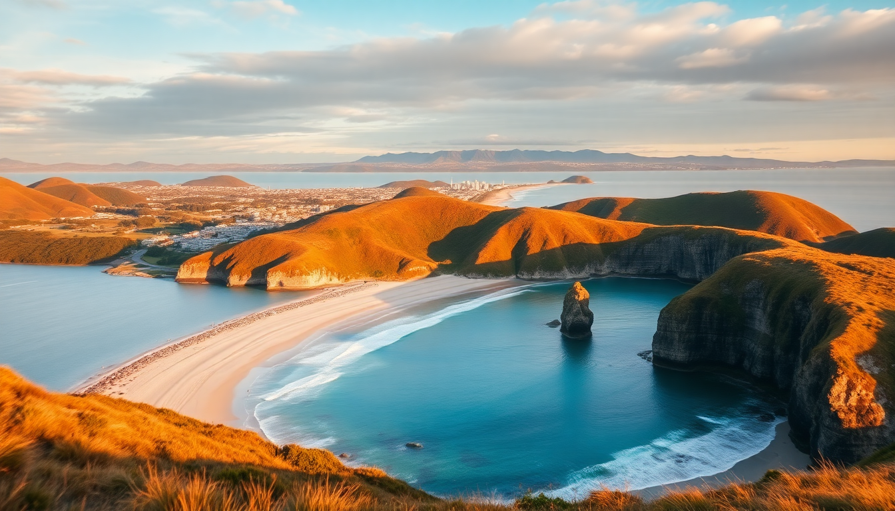

Best Beaches in New Zealand: North & South Island Guide

I spent three months driving a campervan from the top of the North Island down to the bottom of the South, chasing good surf, calm bays, and sand that didn’t bite. New Zealand’s beaches are wildly different — black volcanic sand on one coast, golden crescents on the other, and some that require a boat or a hike to reach. Here’s what I actually found worth the trip.
What are the best beaches near Auckland for a day trip?
Auckland sits on a narrow isthmus, so you’re never more than 45 minutes from a decent beach. But not all are created equal. Piha is the famous one — black sand, big surf, and a dangerous rip current that kills someone almost every year. I went on a calm weekday and still watched a lifeguard pull a guy out. Swim between the flags or don’t swim at all.
- Piha — dramatic black sand, Lion Rock landmark, strong currents. Go for a walk, not a swim.
- Karekare — quieter than Piha, same black sand, featured in The Piano. The lagoon is safer for kids.
- Mission Bay — closest to downtown, grassy park, fish and chips from De Fontein. Fine for a quick dip but nothing special.
- Tawharanui — 75 minutes north, white sand, a protected marine reserve. I snorkeled with snapper here. Worth the drive.
If you only have one day, drive to Tawharanui early. Grab a pie from Matakana Village Bakery on the way back.
Which Coromandel beaches are worth the drive?
The Coromandel Peninsula is a two-hour drive from Auckland, and the road gets twisty. I hit it in late summer, and the crowds were real. But the beaches deliver.
Hot Water Beach is the gimmick — dig a hole in the sand at low tide and hot geothermal water bubbles up. I arrived two hours before low tide and found a dozen people already digging. Bring a spade (rent one from the café) and go at least 90 minutes before low tide. The water is genuinely warm, but it’s not a spa — it’s gritty sand in a hole.
- Hot Water Beach — dig your own hot pool. Check tide times. Rent a spade from Hot Water Beach Café.
- Cathedral Cove — iconic rock arch, white sand, 45-minute walk downhill from the carpark. Book the shuttle in peak season — the parking lot fills by 9 AM.
- New Chums Beach — no road access, 30-minute walk north of Whangapoua. I had it almost to myself on a Tuesday. No facilities, so pack water.
- Whangamata — surf town, long white beach, good for beginners. I took a lesson with Whangamata Surf School and was standing up by the second wave.
Skip Hahei beach itself — it’s pretty but packed with tour groups. Use it as a launch point for Cathedral Cove instead.
What’s the best way to experience Abel Tasman’s beaches?
Abel Tasman National Park on the South Island has golden sand and clear turquoise water that looks photoshopped. The catch: you can’t drive to most of it. The coast track is a 60-kilometer multi-day hike, but I did it as a day trip by water taxi.
I booked a morning water taxi from Kaiteriteri with Abel Tasman Sea Shuttles. They dropped me at Medlands Beach, and I walked south back to Marahau over four hours. The track is easy — gentle hills, boardwalks, and frequent beach detours.
- Anchorage Beach — the most popular stop. Has a hut and a DOC campsite. The swimming is excellent. I saw seals playing in the shallows.
- Medlands Beach — quieter, longer stretch of sand. Good for a picnic and a nap.
- Torrent Bay — tidal estuary. At low tide you can walk across the sand flats. At high tide it’s a paddle.
- Bark Bay — my favorite. Small, sheltered, and the track passes a swingbridge over a river. I swam here and the water was warmer than the ocean side.
Stay overnight in Kaiteriteri at Kaiteriteri Beach Motor Camp — basic cabins but you’re 50 meters from the beach. The Park Café does a decent flat white and bacon butty.
When is the best time to visit New Zealand beaches?
Summer (December to February) is peak season. Water temps hit 20°C in the north, and the Coromandel and Abel Tasman are packed. I went in late February and early March — the weather was still hot, school holidays were over, and the crowds thinned noticeably.
- December–February — hot, busy, book accommodation months ahead. Water warmest in the north.
- March–April — my pick. Warm days, fewer people, cheaper campervan rentals. The water in Abel Tasman was still swimmable in late March.
- June–August — winter. The South Island beaches are cold and windy. North Island beaches like Piha can be moody and dramatic but not for swimming.
- September–November — spring. Unpredictable weather. I got sunburned and rained on in the same day at Cathedral Cove.
Avoid the Christmas–New Year period unless you like queuing for parking. I watched a 45-minute line form at the Cathedral Cove shuttle stop on December 28.
Are there any underrated beaches I shouldn’t skip?
Yes. Most tourists hit the same five beaches. I found a few that deserve more attention.
Wharariki Beach at the top of the South Island is a 20-minute walk through farmland. The sand dunes are massive, and fur seals lounge on the rocks. I sat on a log and watched a seal pup chase seagulls for 30 minutes. The walk is muddy after rain — wear shoes you don’t mind ruining.
- Wharariki Beach — seal colony, huge dunes, near Puponga. Walk from the carpark.
- Ōhope Beach — near Whakatane in the Bay of Plenty. 11 kilometers of uninterrupted sand. I ran the length of it one morning and saw maybe 10 people.
- Tunnel Beach — near Dunedin. A hand-carved tunnel leads to a small cove. It’s a 30-minute walk down a steep path. Go at low tide or you can’t access the sand.
- Maitai Bay — on the Karikari Peninsula in Northland. White sand, calm water, and a DOC campsite with hot showers. I stayed two nights and barely moved.
What should I pack for a New Zealand beach trip?
The sun here is brutal. The ozone layer is thinner, and I got burned through a cloud cover in Abel Tasman. Pack smarter than I did.
- Sun protection — reef-safe sunscreen (I used Sunsense), a wide-brim hat, polarized sunglasses. The UV index hits 11+ in summer.
- Layers — a windbreaker or fleece. The wind on Piha and Wharariki cuts through a t-shirt.
- Water shoes — the sandflies at Medlands Beach are relentless, but water shoes help on rocky sections of the Abel Tasman track.
- Dry bag — for water taxi trips and kayaking. I used a Sea to Summit 13-liter and it kept my phone dry during a splashy landing at Anchorage.
- Insect repellent — sandflies are worst in the South Island. I used Goodbye Sandfly and it worked better than DEET.
FAQ
Are New Zealand beaches safe for swimming? Most are, but rips are common on west coast beaches like Piha. Always swim between the flags where lifeguards are present. East coast beaches like those in Abel Tasman and Coromandel are generally calmer. Check the Safeswim website for real-time water quality and hazard updates.
Do I need to book water taxis or shuttles in advance? Yes, especially from December to March. I booked my Abel Tasman Sea Shuttles water taxi three days ahead and still only got the 8 AM slot. Cathedral Cove shuttles fill up by 8:30 AM in peak season. Book online at least a week out if you can.
Can I camp on the beaches? Freedom camping is restricted on most popular beaches. DOC campsites like Kaiteriteri Beach Motor Camp or Maitai Bay are your best bet. You can’t just pitch a tent on Cathedral Cove or Hot Water Beach — you’ll be fined. Use the CamperMate app to find legal spots.
Conclusion
- Auckland day trip: drive to Tawharanui or Piha for variety, but skip Mission Bay if you want real sand.
- Coromandel: hit Hot Water Beach at low tide, Cathedral Cove early, and New Chums for solitude.
- Abel Tasman: take a water taxi from Kaiteriteri to Medlands or Bark Bay, then walk back south.
- Timing: late February to March is the sweet spot — warm water, fewer crowds, lower prices.
- Packing: sunscreen, wind layer, water shoes, and sandfly repellent are non-negotiable.